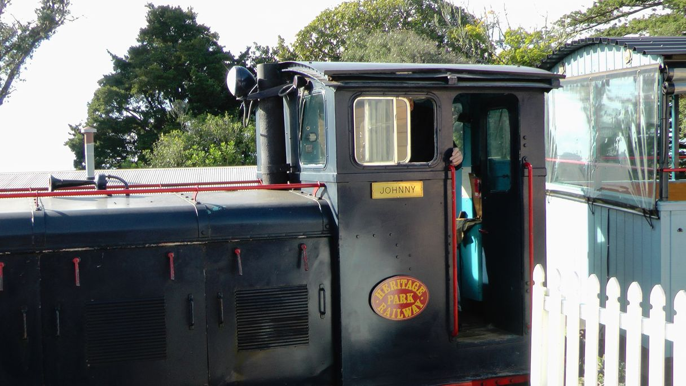
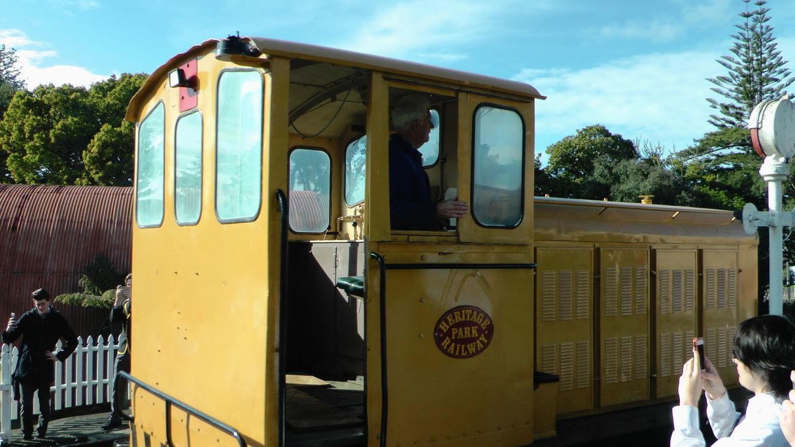
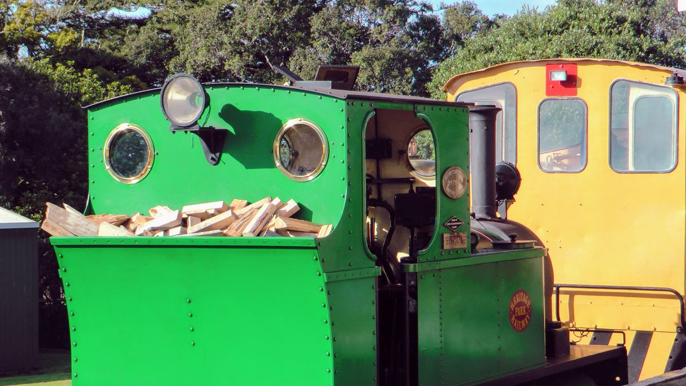
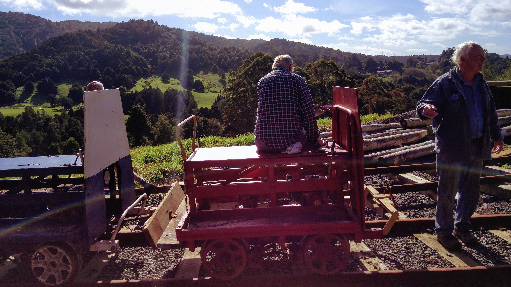

Johnny
Built 1961 by Drewry of London, England. 0-6- 0 wheel arrangement
Power 104HP Gardner diesel
Came from Portland Cement Works, Whangarei about 1990.
Weight 12 tonnes.
The Price
Built by A & G Price of Thames, New Zealand in 1961 for Pacific Steel. Subsequently
sold to Ballance Fertilisers, Whangarei who donated it to us in 2004.
Powered by 104 HP Gardner diesel. 0-4- 0 wheel arrangement
Weight 18 tonnes.
Seymour
Built 1955 by Peckett and Sons, Bristol, England. It was the last new steam
locomotive to be imported into New Zealand.
It worked at Portland cement Works, Whangarei and was donated to the club in
1978.
It was reboilered and given an extensive overhaul in 2007. It operates every third
Sunday and other museum live days or special occasions.
Weight 12tonnes.
Jiggers
Jiggers are used on some of the less-used tracks and can carry a party of 6 comfortably per cart.